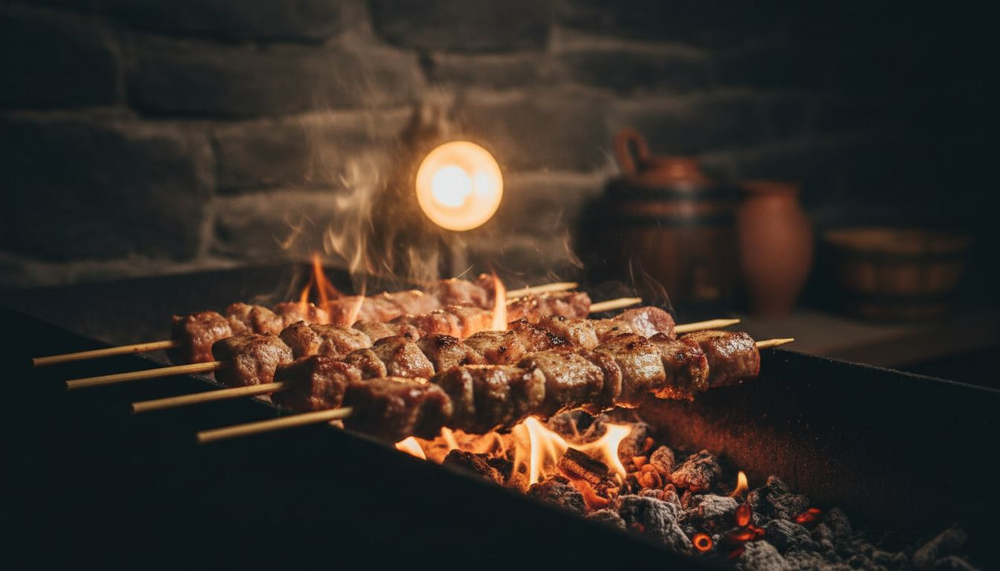
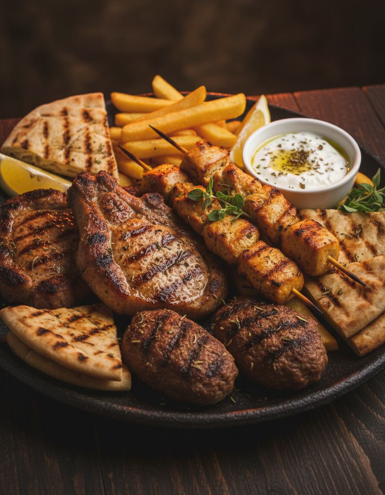
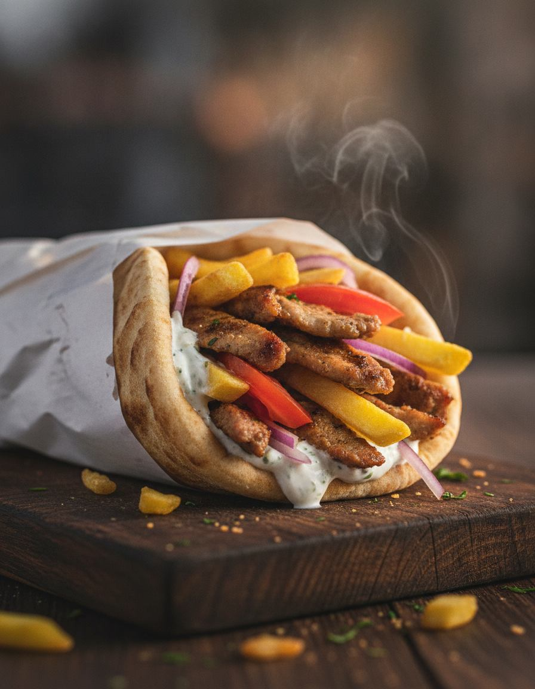
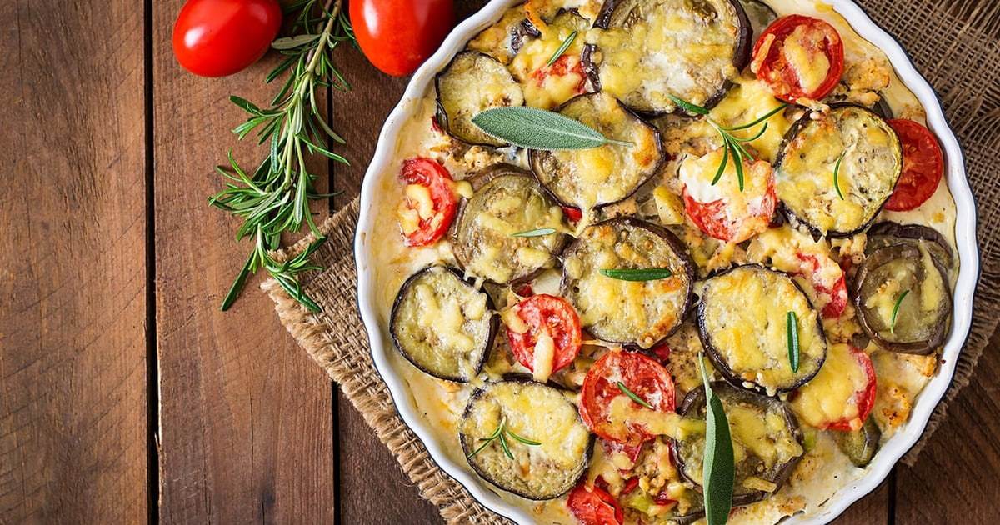

Μόνο κάρβουνο
Καμία γάστρα, καμία πλάκα, κανένα γκάζι. Η φωτιά ανάβει στις πέντε παρά κάτι και σβήνει όταν φύγει ο τελευταίος.

Μυστικό μας: το κάρβουνο.
Στην Κυπαρισσία, από τις 5 το απόγευμα μέχρι αργά.
Δευ – Σάβ · 17:00 – 00:30 · Ελένης Χαμέρη, Κυπαρισσία


Ψητοπωλείο · Κυπαρισσία
Δεν ανακαλύψαμε το σουβλάκι. Απλώς το σεβόμαστε: κρέας που παραλαμβάνουμε φρέσκο, κάρβουνο που ανάβει νωρίς το απόγευμα, και πίτα που ζεσταίνεται τη στιγμή της παραγγελίας — όχι πριν.
Θα μας βρεις στην οδό Ελένης Χαμέρη, με τραπέζια έξω για τα καλοκαιρινά βράδια και το τηλέφωνο να χτυπάει συνέχεια για παραγγελίες. Έτσι μας αρέσει.
Καμία γάστρα, καμία πλάκα, κανένα γκάζι. Η φωτιά ανάβει στις πέντε παρά κάτι και σβήνει όταν φύγει ο τελευταίος.
Παραλαβή καθημερινά, ελληνική προέλευση.

Τηλεφωνικά ή μέσω efood, ζεστό στην πόρτα σου.
Visa, Mastercard, ανέπαφα — ό,τι σε βολεύει.
Ένα τηλέφωνο δρόμος. Ετοιμάζουμε την παραγγελία σου σε λίγα λεπτά.
Κριτικές
«Πολύ ωραίο φαγητό σε προσιτές τιμές. Μεγάλη ποικιλία σε κρέατα, με εξαιρετική ποιότητα.»
«Πανέμορφος χώρος, ευγενικό προσωπικό και υπέροχο φαγητό! Και όλα αυτά σε προσιτές τιμές.»
«Εξαιρετικό φαγητό, πολύ καλή εξυπηρέτηση, καταπληκτική ποιότητα και υπέροχο περιβάλλον.»
Επίσκεψη
| Δευτέρα | 17:00 – 00:30 |
| Τρίτη | 17:00 – 00:30 |
| Τετάρτη | 17:00 – 00:30 |
| Πέμπτη | 17:00 – 00:30 |
| Παρασκευή | 17:00 – 00:30 |
| Σάββατο | 17:00 – 00:30 |
| Κυριακή | Κλειστά |
Ελένης Χαμέρη, Κυπαρισσία 245 00
Συχνές ερωτήσεις
Ναι — παραδίδουμε σε όλη την Κυπαρισσία, τηλεφωνικά στο 27610 25750 ή μέσω efood. Για πιο απομακρυσμένα σημεία, πάρε μας ένα τηλέφωνο να το κανονίσουμε.
Δευτέρα έως Σάββατο, 17:00 με 00:30. Την Κυριακή ξεκουραζόμαστε (και εμείς και τα κάρβουνα).
Φυσικά — Visa, Mastercard, American Express και ανέπαφες πληρωμές, στο κατάστημα και στο delivery.
Ναι, έχουμε τραπέζια και σε εξωτερικό χώρο. Δεχόμαστε και κρατήσεις για παρέες — τηλεφώνησε λίγο νωρίτερα. Α, και ο σκύλος σου είναι ευπρόσδεκτος.